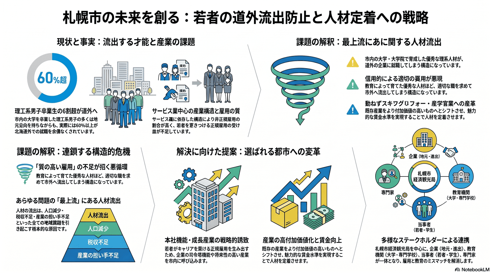

産業・観光・MICE
10年以内
若者の道外流出と人材定着
地元志向でも、結果として若い人材が道外へ流出している。

背景
受け皿となる質の高い雇用が不足すれば、教育で育てた人材ほど外へ出ていく。人材流出は人口・税収・担い手の問題すべての上流にある構造課題である。
事実
- 市内大学を卒業した理工系男子の多くは地元就職を望みつつ、実際には6割超が北海道外で就職したとの調査がある。
- サービス業中心の産業構造で非正規雇用の割合が高く、正規雇用を増やす改革が課題とされている。
解釈
質の高い雇用の不足は、育てた人材ほど外へ出す。人材流出は人口・税収・担い手の問題すべての上流にある。
提案
- 本社機能・成長産業の誘致による正規雇用の創出。
- 賃金水準の引き上げに資する産業の高付加価値化。
検討体制・メンバー
札幌市経済観光局が企業誘致・雇用施策を担う。検討会には地元・進出企業の経営者、大学・専門学校のキャリア担当、若者・学生の当事者、労働経済の専門家を入れ、求められる雇用と教育のミスマッチを埋める。
AIノート
AIの貢献度は小〜中。求人・求職のマッチングや、リモートワーク・地方分散の流れを活かした働き方支援には役立つ。ただし高付加価値な雇用の創出は産業構造の問題で、AIは雇用の質向上を補助する程度にとどまる。